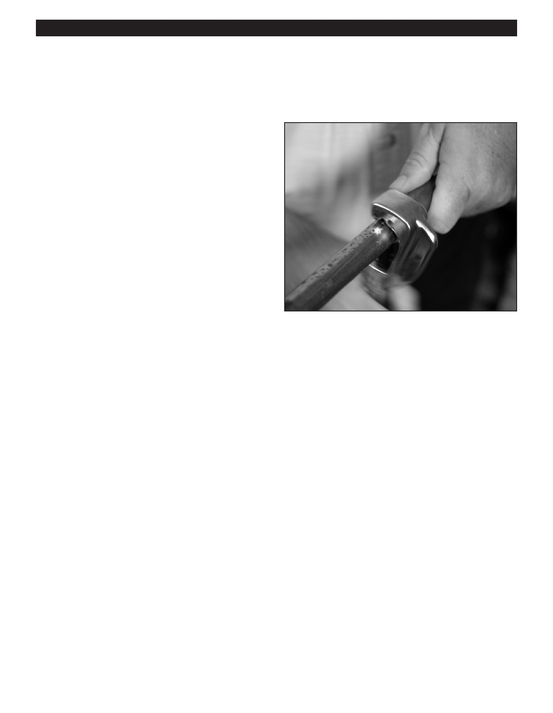

PA RT I C I PA N T R E S O U R C E G U I D E
Working with Pipes and Fittings
You can do lots of things with pipes and fittings: cut them, solder them, glue them, and
bend them. In this part of the training, you’ll learn how.
How to Cut Copper Pipe
A smooth, straight cut is the first step in making a watertight
joint. A tool called a tubing cutter will help you make this
clean, smooth cut.
1. Shut off the water to the pipe.
2. Position the tubing cutter (or hacksaw) on the pipe and
tighten the knob to allow the blade to just pierce the pipe.
3. Turn the cutter 360 degrees to score the pipe.
4. Tighten the cutter and continue turning until the pipe
is cut.
5. Use a round file to file down the sharp edges of pipe.
Tool and Maintenance List:
Tubing Cutter
Round File
Notes:
14